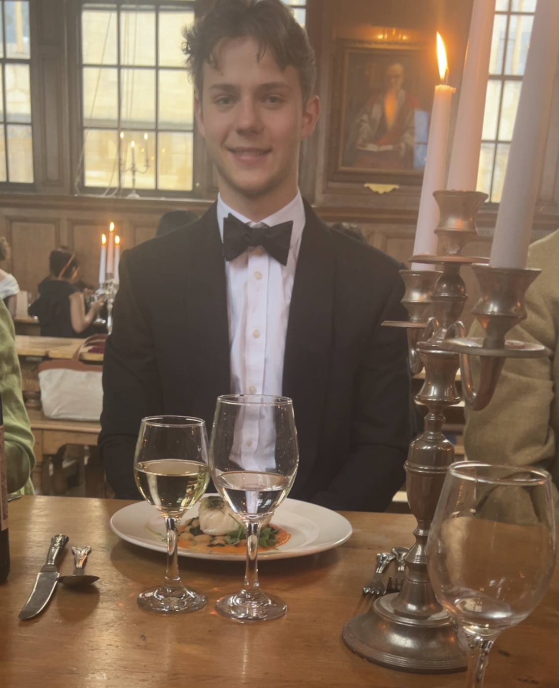

Maths tutoring from an Oxford Mathematics student.
I’m George Clifton, an undergraduate studying Mathematics at the University of Oxford, Hertford College. I tutor online, with a particular focus on Further Maths A-level, Maths A-level and Oxbridge application help, including TMUA/ Interview prep.
I achieved A*A*A* in Maths, Further Maths and Physics, and I now study maths full-time at Oxford.

Tutoring
My approach is direct and exam-oriented. I believe each exam is a skill in itself, so the sessions should have a strong focus on working through past paper questions.
I help students prepare by working through past TMUA-style problems carefully, and aiding their though process when necessary. This method helps candidates improve ???
Pricing
£40 per hour
Lessons are £40 an hour, I Schedule an hour and a half for each lesson, with fifteen miuets before the lesson for preparation, and fifteen minuets after the lesson in case we go over. Lessons are paid for via bank transfer. I do not use a booking link. Email me and we can discuss what you are preparing for, where you are currently at, and whether I can help.
Contact
To ask about tutoring, email me or text me directly:
hert7442@ox.ac.uk
07376371190